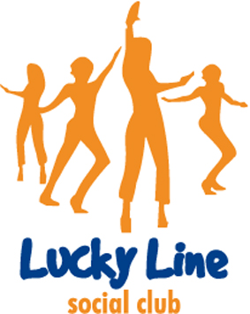
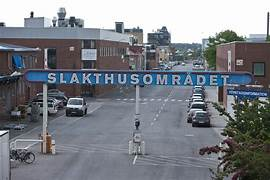
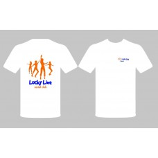
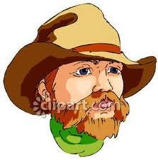

Information angående Coronaläget
Vi ställer in Socialdansen den 21 Mars och dagdansen den 15 April p.g.a det rådande läget. Danserna den 25/4 och 23/5 fattar vi beslut om lite längre fram. Tills andra direktiv ges från hälsovårdsmyndigheterna så kör vi kurserna som vanligt. Håll utkik här efter ny information. Vi är så pass få på kurserna nu att vi kan hålla behörigt avstånd till varandra. Följande direktiv gäller förstås:- Om du har symptom såsom hosta, andningssvårigheter och feber, stanna hemma och kontakta 1177.
- Om du besökt länder som är hårt drabbade av Corona (bl.a. Kina, Italien, Iran, Syd-korea, Frankrike och Spanien), visa hänsyn och stanna hemma i minst 14 dagar efter hemkomst.
- Om du har träffat någon som visat sig vara smittad, visa hänsyn och stanna hemma i minst 14 dagar.
- Är man sjuk stannar man hemma från kursen, oavsett om det är corona-tider eller inte!
- Tillhör du någon riskgrupp med nedsatt immunförsvar eller är väldigt orolig ska du stanna hemma.

NYBÖRJARDANSEpic Studio
|
Vi dansar till danslista med alternativdanser och utrymme för önskedanser. Danserna blir sådana som lärs ut termin 1 till 4. Vi håller koll på vad andra klubbar lär ut så du får säkert dansa det du har lärt dig på kurs. Ungefär 15.20 tar vi ca 10 minuters paus.
Entré 100:- Kaffe, Te, och fikabröd finns till försäljning.
Entré 100:- Kaffe, Te, och fikabröd finns till försäljning.
|  |
SOCIAL DANCEEpic Studio |
OBS! Den här gången har vi stort dansgolv!
Dans efter danslista Newcomer 3 - Intermediate. Vi har nästan alltid en alternativdans på lättare nivå. Ungefär 17.20 tar vi ca 15 minuters paus. Adress: Rökerivägen 21 Johanneshov, se vägbeskrivning.
Entré 100:- OBS! Tag med eget fika den här gången
Dans efter danslista Newcomer 3 - Intermediate. Vi har nästan alltid en alternativdans på lättare nivå. Ungefär 17.20 tar vi ca 15 minuters paus. Adress: Rökerivägen 21 Johanneshov, se vägbeskrivning.
Entré 100:- OBS! Tag med eget fika den här gången
LINEDANCE PÅ DAGTIDEpic Studio
|
Vi dansar på nivå 1 - 7 efter danslista med alternativdanser.
Adress: Rökerivägen 21 Johanneshov, se vägbeskrivning
Entré 100:- Kaffe, Te, och fikabröd finns till försäljning.
| Danstillfällen under våren 2020 |
|---|
| 21 Mars 14.00 Socialdans INSTÄLLD!! |
| 15 April 12.00 Dagdans INSTÄLLD!! |
| 25 April 14.00 Nybörjardans på Epic Studio |
| 23 Maj 14.00 Socialdans på Epic Studio |

Har du friskvårdsbidrag hos Wellnet?
Använd det gärna hos oss

Nu kan du beställa en klubbtröja från Mmadeits webshop. Den finns i några olika varianter, bla en med s.k Rhinestones runt texten. Stort tack till Anki Norlin som tagit initiativ till att fixa med det här. Det är många som under åren frågat efter klubbtröjor.KLUBBTRÖJA
Klicka här för att komma till webshopen.

Vad vet vi egentligen om Linedancens ursprung?
De flesta Linedance-siter har någon teori om den, men vad vet man med säkerhet? Vi har låtit göra lite efterforskningar.LINEDANCENS HISTORIA
Här kan du läsa resultatet.